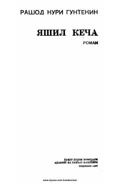

YKTurk yozuvchisining taraqqiyparvarlik g'oyalari aks etgan mashhur romani.
Mashhur turk yozuvchisi Rashod Nuri Guntekinning bu romani taraqqiyparvar ayollar hayotini aks ettiradi. Bosh qahramon Shoxin afandi poytaxtdan uzoqdagi Sariova qishloqida maktab o'qituvchisi bo'lib, eski sarqitlarga qarshi kurashga otlanadi. U o'z atrofidagi xalqparvar kishilar bilan birga mansabparastlar, johillar va ruhoniylar qarshiligini yengishga harakat qiladi.